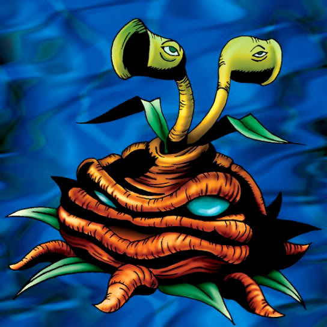

Firegrass

STATS
ATK: 700
DEF: 600DECK COST
Deck Cost per Card: 13Fusion List (62 Possible Fusions)
- Firegrass + Amazon of the Seas = Queen of Autumn Leaves
- Firegrass + Ancient Jar = Dissolverock
- Firegrass + Arlownay = Queen of Autumn Leaves
- Firegrass + Axe Raider = Flame Swordsman
- Firegrass + Baby Dragon = B. Dragon Jungle King
- Firegrass + Beautiful Headhuntress = Queen of Autumn Leaves
- Firegrass + Blue-Winged Crown = Crimson Sunbird
- Firegrass + Burglar = Flame Cerebrus
- Firegrass + Claw Reacher = Rose Spectre of Dunn
- Firegrass + Clown Zombie = Pumpking the King of Ghosts
- Firegrass + Crawling Dragon #2 = B. Dragon Jungle King
- Firegrass + Dancing Elf = Queen of Autumn Leaves
- Firegrass + Dragon Zombie = Pumpking the King of Ghosts
- Firegrass + Droll Bird = Mavelus
- Firegrass + Faith Bird = Crimson Sunbird
- Firegrass + Fiend's Hand = Wood Remains
- Firegrass + Fiend Sword = Flame Swordsman
- Firegrass + Fire Reaper = Wood Remains
- Firegrass + Flame Ghost = Pumpking the King of Ghosts
- Firegrass + Flame Swordsman = Vermillion Sparrow
- Firegrass + Flower Wolf = Flame Cerebrus
- Firegrass + Fusionist = Flame Cerebrus
- Firegrass + Garvas = Flame Cerebrus
- Firegrass + Ghoul with an Appetite = Pumpking the King of Ghosts
- Firegrass + Graveyard and the Hand of Invitation = Wood Remains
- Firegrass + Great Bill = Flower Wolf
- Firegrass + Griffore = Flame Cerebrus
- Firegrass + Haniwa = Dissolverock
- Firegrass + Ice Water = Queen of Autumn Leaves
- Firegrass + Kagemusha of the Blue Flame = Charubin the Fire Knight
- Firegrass + Key Mace = Queen of Autumn Leaves
- Firegrass + Kurama = Mavelus
- Firegrass + LaMoon = Queen of Autumn Leaves
- Firegrass + Lesser Dragon = B. Dragon Jungle King
- Firegrass + Magical Ghost = Pumpking the King of Ghosts
- Firegrass + Masked Clown = Bean Soldier
- Firegrass + Mavelus = Crimson Sunbird
- Firegrass + Metal Dragon = B. Dragon Jungle King
- Firegrass + Milus Radiant = Flame Cerebrus
- Firegrass + Monster Egg = Bean Soldier
- Firegrass + Mysterious Puppeteer = Charubin the Fire Knight
- Firegrass + Mystic Horseman = Flame Cerebrus
- Firegrass + Mystical Elf = Queen of Autumn Leaves
- Firegrass + Mystical Sheep #1 = Flame Cerebrus
- Firegrass + Nemuriko = Queen of Autumn Leaves
- Firegrass + One-Eyed Shield Dragon = B. Dragon Jungle King
- Firegrass + Petit Dragon = B. Dragon Jungle King
- Firegrass + Pot the Trick = Dissolverock
- Firegrass + Princess of Tsurugi = Queen of Autumn Leaves
- Firegrass + Punished Eagle = Crimson Sunbird
- Firegrass + Queen's Double = Queen of Autumn Leaves
- Firegrass + Shadow Specter = Wood Remains
- Firegrass + Silver Fang = Flame Cerebrus
- Firegrass + Skull Red Bird = Crimson Sunbird
- Firegrass + Succubus Knight = Queen of Autumn Leaves
- Firegrass + Sword Arm of Dragon = B. Dragon Jungle King
- Firegrass + Swordsman from a Foreign Land = Charubin the Fire Knight
- Firegrass + The Wandering Doomed = Wood Remains
- Firegrass + Thunder Dragon = B. Dragon Jungle King
- Firegrass + Waterdragon Fairy = Queen of Autumn Leaves
- Firegrass + Wicked Dragon with the Ersatz Head = B. Dragon Jungle King
- Firegrass + Witch's Apprentice = Queen of Autumn Leaves